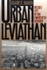
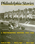

Browse
other Author lists:
A B C
D E F
G H I
J K L
M N O
P Q R
S T U
V W X
Y Z |

|
Self-Determination without Nationalism
A Theory of Postnational Sovereignty
Dahbour, Omar
272 pp • 6x9 • Fall
2012
paper 978-1-4399-0075-8
cloth 978-1-4399-0074-1
|

|
Reclaiming
Class
Women, Poverty, and the Promise of Higher Education in America
edited
by Adair, Vivyan C. and Sandra L. Dahlberg 280
pp • 6x9 • Spring 2003
paper 978-1-59213-022-1
cloth 978-1-59213-021-4
|

|
Violent Belongings
Partition, Gender, and National Culture in Postcolonial India
Daiya, Kavita 274 pp • 6x9 • Spring 2008
paper 978-1-59213-743-5
cloth 978-1-59213-743-5
|

|
Eyes
Without Country
Searching for a Palestinian Strategy of Liberation
Dajani,
Souad R. 256 pp • 6x9 • Fall
1994
paper 978-1-56639-241-9
cloth 978-1-56639-240-2 |
 |
Vanishing Eden
White Construction of Memory, Meaning, and Identity in a Racially Changing City
Maly, Michael T. and Heather M. Dalmage
198 pp • 6x9 • Fall 2015
paper 978-1-4399-1119-8
cloth 978-1-4399-1118-1 |

|
Ethnographies of Youth and Temporality
Time Objectified
edited by Dalsgård, Anne Line, Martin Demant Frederiksen, Susanne Højlund and Lotte Meinert
Afterword by Michael Flaherty
206 pp • 6x9 • Fall 2013
cloth 978-1-4399-1066-5 |

|
Swing
Era New York
The Jazz Photographs of Charles Peterson
Stokes,
W. Royal, photographs by Don Peterson, foreword by Stanley Dance
232 pp • 10x8 • Fall 1994
paper 978-1-56639-464-2
cloth 978-1-56639-227-3 |

|
Myth
and Modern Philosophy
Daniel,
Stephen H. 256 pp • Fall 1989
cloth 978-0-87722-644-4 |

|
More
Than Black?
Multiracial Identity and the New Racial Order
Daniel,
G. Reginald 280 pp • 7x10 •
Fall 2001
paper 978-1-56639-909-8
cloth 978-1-56639-908-1
|
|
Women
and Trade Unions in Eleven Industrialized Countries
edited
by Cook, Alice H., Val R. Lorwin and Arlene Kaplan Daniels
360 pp • Fall 1983
cloth 978-0-87722-319-1 |

|
Detroit
Race and Uneven Development
Darden,
Joe T., Richard Child Hill, June Thomas and Richard Thomas
336 pp • Fall 1987
paper 978-0-87722-776-2
cloth 978-0-87722-485-3
|
 |
Journeys in Sociology
From First Encounters to Fulfilling Retirements
edited by Darling, Rosalyn Benjamin and Peter J. Stein
Published in collaboration with the American Sociological Association Opportunities in Retirement Network
264 pp • 6x9 • Spring 2017
paper 978-1-4399-1475-5
cloth 978-1-4399-1474-8
|

|
Cultural
Politics and Social Movements
edited
by Darnovsky, Marcy, Barbara Epstein and Richard Flacks
384 pp • 6x9 • Fall 1995
paper 978-1-56639-323-2
cloth 978-1-56639-322-5
|

|
BITS of Belonging
Information Technology, Water, and Neoliberal Governance in India
Dasgupta, Simanti
232 pp • 6x9 • Fall 2015
paper 978-1-43991-259-1
cloth 978-1-43991-258-4 |

|
Veterans
Stadium
Field of Memories
Westcott,
Rich, foreword by Darren Daulton 232
pp • 7x10 • Fall 2005
cloth 978-1-59213-428-1
|

|
A
Needle, a Bobbin, a Strike
Women Needleworkers in America
edited
by Jensen, Joan M. and Sue Davidson 256
pp • Fall 1984
paper 978-0-87722-407-5
cloth 978-0-87722-340-5 |
|
Saving San Francisco
Relief and Recovery after the 1906 Disaster
Davies, Andrea Rees
232 pp • 6x9 • Fall 2011
paper 978-1-4399-0433-6
cloth 978-1-4399-0432-9
|

|
Woman's
Place Is at the Typewriter
Office Work and Office Workers, 1870-1930
Davies,
Margery W. 256 pp • Fall 1982
paper 978-0-87722-368-9
cloth 978-0-87722-291-0 |

|
Sponsored
Identities
Cultural Politics in Puerto Rico
D�vila,
Arlene M. 301 pp • 5.5x8.25 •
Fall 1997
paper 978-1-56639-549-6
cloth 978-1-56639-548-9
|
 |
The Great Refusal
Herbert Marcuse and Contemporary Social Movements
edited by Lamas, Andrew T., Todd Wolfson, and Peter N. Funke, with a foreword by Angela Y. Davis
440 pp • 6x9 • Fall 2016
paper 978-1-4399-1304-8
cloth 978-1-4399-1303-1 |

|
The
Male Nude in Contemporary Photography
Davis,
Melody D. 208 pp • 7x10 •
Fall 1991
paper 978-1-56639-198-6
cloth 978-0-87722-839-4 |

|
The
Affordable City
Toward a Third Sector Housing Policy
edited
by Davis, John Emmeus 320 pp •
6x9 • Fall 1993
cloth 978-1-56639-109-2
|

|
Urban
Leviathan
Mexico City in the Twentieth Century
Davis,
Diane E. 424 pp • 6x9.25 •
Spring 1994
paper 978-1-56639-151-1
cloth 978-1-56639-150-4
|

|
Philadelphia
Stories
A Photographic History, 1920-1960
Miller,
Fredric M., Morris J. Vogel and Allen F. Davis 319
pp • 8x10 • Fall 1988
cloth 978-0-87722-551-5 |

|
Still
Philadelphia
A Photographic History, 1890-1940
Miller,
Fredric M., Morris J. Vogel and Allen F. Davis 312
pp • 8x10 • Spring 1983
cloth 978-0-87722-306-1 |

|
AIDS
Crisis in Professional Ethics
edited
by Cohen, Elliot D. and Michael Davis 288
pp • 6x9 • Spring 1994
paper 978-1-56639-165-8
cloth 978-1-56639-164-1 |

|
Literary
Gestures
The Aesthetic in Asian American Writing
edited
by Davis, Roc�o G. and Sue-Im Lee 248 pp •
6x9 • Fall 2005
paper 978-1-59213-365-9
cloth 978-1-59213-364-2
|

|
Conspicuous
Production
Automobiles and Elites in Detroit, 1899-1933
Davis,
Donald Finlay 320 pp • Fall 1988
cloth 978-0-87722-549-2 |
|
Making
History Matter
Dawidoff,
Robert 304 pp • 6x9 • Fall
1999
paper 978-1-56639-749-0
cloth 978-1-56639-748-3
|

|
Dream Machine
Realism and Fantasy in Hindi Cinema
Dayal, Samir 320 pp • 6x9 •
Fall 2015
paper 978-1-4399-1064-1
cloth 978-1-4399-1063-4 |

|
A
Pleasing Birth
Midwives and Maternity Care in the Netherlands
De
Vries, Raymond 296 pp • 6x9 •
Fall 2004
paper 978-1-59213-103-7
cloth 978-1-59213-102-0
|

|
Marsh,
Meadow, Mountain
Natural Places of the Delaware Valley
edited
by Harding, John J., illustrated by Carol Decker 320
pp • Fall 1985
paper 978-0-87722-401-3
cloth 978-0-87722-391-7 |
|
Criminology and Public Policy
Putting Theory to Work
Barlow, Hugh and Scott Decker
306 pp • 6x9 • Fall 2009
paper 978-1-4399-0007-9
cloth 978-1-4399-0006-2
|
|
Drug Smugglers on Drug Smuggling
Lessons from the Inside
Decker, Scott H. and Margaret Townsend Chapman
224 pp • 6x9 • Fall 2007
paper 978-1-59213-643-8
cloth 978-1-59213-642-1
|

|
The Teacher's Attention
Why Our Kids Must and Can Get Smaller Schools and Classes
Delavan, Garrett
244 pp • 6x9 • Spring 2009
paper 978-1-59213-894-4
cloth 978-1-59213-893-7
|

|
Mexican Voices of the Border Region
Velasco Ortiz, Laura and Oscar F. Contreras, with translations by Sandra del Castillo
238 pp • 6x9 • Spring 2011
paper 978-1-59213-909-5
cloth 978-1-59213-908-8
|

|
No
Mercy
How Conservative Think Tanks and Foundations Changed America's
Social Agenda
Stefancic,
Jean and Richard Delgado, foreword by Mark Tushnet 208
pp • 6x9 • Fall 1996
cloth 978-1-56639-469-7 |

|
Critical
White Studies
Looking Behind the Mirror
edited
by Delgado, Richard and Jean Stefancic 704
pp • 7x10 • Spring 1997
paper 978-1-56639-532-8
cloth 978-1-56639-531-1
|

|
New
Immigrants, Old Unions
Organizing Undocumented Workers in Los Angeles
Delgado,
H�ctor L. 200 pp • 5.5x8.25 •
Spring 1993
paper 978-1-56639-205-1
cloth 978-1-56639-044-6 |

|
Organizing
the Movement
The Roots and Growth of ACORN
Delgado,
Gary 256 pp • Fall 1985
paper 978-0-87722-492-1
cloth 978-0-87722-393-1 |

|
Critical Race Theory
The Cutting Edge
Third Edition
edited
by Delgado, Richard and Jean Stefancic
856 pp • 7x10 • Spring 2013
paper 978-1-4399-1061-0
cloth 978-1-4399-1060-3
|

|
The
Two Faces of Political Apathy
DeLuca,
Thomas 304 pp • 6x9 • Spring
1995
paper 978-1-56639-315-7
cloth 978-1-56639-314-0
|

|
The
New Chicago
A Social and Cultural Analysis
edited by Demissie, Fassil, Koval, John P., Larry Bennett, Michael
I. J. Bennett, Roberta Garner and Kiljoong Kim
384 pp • 7x10 • Fall 2006
paper 978-1-59213-088-7
cloth 978-1-59213-087-0
|

|
A
Complex Sorrow
Reflections on Cancer and an Abbreviated Life
Paget,
Marianne A., edited by Marjorie L. DeVault 176
pp • 5.5x8.25 • Spring 1993
paper 978-1-56639-192-4
cloth 978-1-56639-041-5 |

|
Liberating
Method
Feminism and Social Research
DeVault,
Marjorie L. 275 pp • 6x9 •
Spring 1999
paper 978-1-56639-698-1
cloth 978-1-56639-697-4
|

|
This
Fine Place So Far from Home
Voices of Academics from the Working Class
edited
by Dews, C.L. Barney and Carolyn Leste Law 352
pp • 6x9 • Spring 1995
paper 978-1-56639-291-4
cloth 978-1-56639-290-7
|

|
Out
in the South
edited
by Dews, Carlos L. and Carolyn Leste Law 256
pp • 7x10 • Fall 2000
paper 978-1-56639-814-5
cloth 978-1-56639-813-8
|

|
Society
and Nature
Towards a Green Social Theory
Dickens,
Peter 300 pp • 6x9 • Spring
1992
paper 978-0-87722-969-8
cloth 978-0-87722-968-1 |

|
Evaluating
Art
Dickie,
George 208 pp • Spring 1989
paper 978-0-87722-683-3
cloth 978-0-87722-597-3 |

|
One Last Read
The Collected Works of the World's Slowest Sportswriter
edited by Didinger, Ray
384 pp • 6x9 • Fall 2007
cloth 978-1-59213-600-1
|
|
The
Eagles Encyclopedia
Didinger,
Ray and Robert S. Lyons 336 pp •
8.5x11 • Fall 2005
cloth 978-1-59213-449-6
|

|
The New Eagles Encyclopedia
Didinger,
Ray with Robert S. Lyons 440 pp •
8.3125x10.875 • Fall 2014
cloth 978-1-43991-211-9 |

|
Ordinary
Poverty
A Little Food and Cold Storage
DiFazio,
William 232 pp • 6x9 • Fall 2005
paper 978-1-59213-458-8
cloth 978-1-59213-014-6
|

|
Women
of Color in U.S. Society
edited
by Zinn, Maxine Baca and Bonnie Thornton Dill 360
pp • 6x9 • Fall 1993
paper 978-1-56639-106-1
cloth 978-1-56639-105-4
|
 |
Building Drexel
The University and Its City, 1891–2016
edited by Dilworth, Richardson and Scott Gabriel Knowles
400 pp • 6x9 • Fall 2016
cloth 978-1-4399-1420-5 |

|
Social
Capital in the City
Community and Civic Life in Philadelphia
edited
by Dilworth, Richardson 256 pp • 6x9
• Spring 2006
paper 978-1-59213-345-1
cloth 978-1-59213-344-4
|

|
Animals at Play
Rules of the Game
Bekoff, Marc, illustrations by Michael J. DiMotta
32 pp • 10x7• Fall 2008
cloth 978-1-59213-551-6 |

|
Classical
Hindu Mythology
A Reader in the Sanskrit Puranas
edited
by Dimmit, Cornelia, translated by J. A. B van Buitenen
388 pp • 6x9 • Spring 1978
paper 978-0-87722-122-7
cloth 978-0-87722-117-3
|

|
Women
Between Two Worlds
Midlife Reflections on Work and Family
Dinnerstein,
Myra 210 pp • Fall 1992
paper 978-0-87722-885-1
cloth 978-0-87722-884-4
|

|
Travels of William Bartram Reconsidered
Dion, Mark
112 pp • 8.5x12 • Spring 2010
cloth 978-0-6152-5748-8 |

|
Artifacts,
Art Works, and Agency
Dipert,
Randall R. 288 pp • 6x9 •
Fall 1992
cloth 978-0-87722-990-2 |

|
Women's Activism and Feminist Agency in Mozambique and Nicaragua
Disney, Jennifer Leigh
New in Paperback!
306 pp • 6x9 • Spring 2010
paper 978-1-59213-829-6
cloth 978-1-59213-828-9
|

|
Navigating Gendered Terrain
Stereotypes and Strategy in Political Campaigns
Dittmar, Kelly
230 pp • 6x9 • Fall 2014
paper 978-1-43991-149-5
cloth 978-1-43991-148-8 |

|
Captain America and the Nationalist Superhero
Metaphors, Narratives, and Geopolitics
Dittmer, Jason
242 pp • 6x9 • Fall 2012
paper 978-1-4399-0977-5
cloth 978-1-4399-0976-8
|
|
Women
Living Change
Bourque,
Susan C. and Donna Robinson Divine 288
pp • Spring 1985
cloth 978-0-87722-369-6 |

|
God Talk
Experimenting with the Religious Causes of Public Opinion
Djupe, Paul A. and Brian R. Calfano
276 pp • 6x9 • Fall 2013
paper 978-1-4399-0866-2
cloth 978-1-4399-0865-5 |

|
Religion and Political Tolerance in America
Advances in the State of the Art
edited by Djupe, Paul A.
270 pp • 6x9 • Spring 2015
paper 978-1-4399-1233-1
cloth 978-1-4399-1232-4 |
|
Women
and Film
A Sight and Sound Reader
edited
by Cook, Pam and Philip Dodd 287 pp
• 5.5x8.25 • Fall 1993
paper 978-1-56639-143-6
cloth 978-1-56639-142-9
|

|
Teenagers
and Teenpics
The Juvenilization of American Movies in the 1950s
Doherty,
Thomas 288 pp • 6x9 • Spring
2002
paper 978-1-56639-946-3
cloth 978-1-56639-945-6
|

|
Neopolitics
American Political Ideas in the 1980s
Medcalf,
Linda J. and Kenneth M. Dolbeare 224
pp • Spring 1985
cloth 978-0-87722-388-7 |

|
Jim
Bunning
Baseball and Beyond
Dolson,
Frank 320 pp • 6x9 • Fall
1998
cloth 978-1-56639-636-3
|

|
Christian
Pacifism
Dombrowski,
Daniel A. 240 pp • Spring 1991
cloth 978-0-87722-802-8 |

|
"I Hear America Singing"
Folk Music and National Identity
Donaldson, Rachel Clare
234 pp • 6x9 • Fall 2014
paper 978-1-43991-079-5
cloth 978-1-43991-078-8 |

|
Mulan's Legend and Legacy in China and the United States
Dong, Lan
280 pp • 6x9 • Fall 2010
paper 978-1-59213-971-2
cloth 978-1-59213-970-5 |

|
Something
Left to Lose
Personal Relations and Survival among New York's Homeless
Dordick,
Gwendolyn A. 224 pp • 5.5x8.25
• Spring 1997
paper 978-1-56639-514-4
cloth 978-1-56639-513-7 |

|
The
Neoconservative Mind
Politics, Culture, and the War of Ideology
Dorrien,
Gary 512 pp • 6x9 • Spring
1993
paper 978-1-56639-144-3
cloth 978-1-56639-019-4 |

|
A
Revolution of the Heart
Essays on the Catholic Worker
edited
by Coy, Patrick G., foreword by Jim Douglass 408
pp • Spring 1988
cloth 978-0-87722-531-7 |

|
Search
for Government Efficiency
From Hubris to Helplessness
Downs,
George W. and Patrick D. Larkey 252
pp • Fall 1985
cloth 978-0-87722-409-9 |

|
Rethinking
Sex
Social Theory and Sexuality Research
edited
by Connell, R. W. and G. W. Dowsett 192
pp • 5.5x8.25 • Spring 1993
paper 978-1-56639-073-6
cloth 978-1-56639-072-9
|

|
Consumed
in the City
Observing Tuberculosis at Century's End
Draus,
Paul 304 pp • 6x9 • Spring
2004
paper 978-1-59213-249-2
cloth 978-1-59213-248-5
|

|
Family and Work in Everyday Ethnography
edited by Brown, Tamara Mose and Joanna Dreby
228 pp • 5.5x8.25 • Fall 2013
paper 978-1-4399-1076-4
cloth 978-1-4399-1075-7 |

|
The
Nights of Labor
The Workers' Dream in Nineteenth-Century France
Ranci�re,
Jacques, translated by John Drury, introduction by Donald Reid
448 pp • Fall 1989
paper 978-0-87722-833-2
cloth 978-0-87722-625-3 |

|
South
Philadelphia
Mummers, Memories, and the Melrose Diner
Dubin,
Murray 248 pp • 8.5x11 • Spring
1996
cloth 978-1-56639-429-1 |

|
Making
Time
Ethnographies of High-Technology Organizations
edited
by Dubinskas, Frank A. 238 pp •
Spring 1988
cloth 978-0-87722-535-5 |

|
Becoming
American, Becoming Ethnic
College Students Explore Their Roots
edited
by Dublin, Thomas 256 pp • 6x9
• Spring 1996
paper 978-1-56639-439-0
cloth 978-1-56639-438-3
|

|
Tasting Freedom
Octavius Catto and the Battle for Equality in Civil War America
Biddle, Daniel R. and Murray Dubin
New in Paperback!
632 pp • 6x9 • Fall 2017
paper 978-1-4399-1349-9
cloth 978-1-59213-465-6
|

|
Black Regions of the Imagination
African American Writers between the Nation and the World
Dunbar, Eve
232 pp • 5.5x8.25 • Fall 2012
paper 978-1-4399-0943-0
cloth 978-1-4399-0942-3
|

|
Unraveling the Real
The Fantastic in Spanish-American Ficciones
Duncan, Cynthia
280 pp • 6x9 • Fall 2010
paper 978-1-4399-0241-7
cloth 978-1-4399-0240-0
|

|
Journeys
of Women in Science and Engineering
No Universal Constants
Ambrose,
Susan A., Kristin L. Dunkle, Barbara B. Lazarus, Indira Nair
and Deborah A. Harkus 512 pp •
7x10 • Spring 1997
paper 978-1-56639-528-1
cloth 978-1-56639-527-4
|

|
Identifying Consumption
Subjects and Objects in Consumer Society
Dunn, Robert G.
248 pp • 5.5x8.25 • Spring 2008
paper 978-1-59213-870-8
cloth 978-1-59213-869-2
|

|
Toward a Pragmatist Sociology
John Dewey and the Legacy of C. Wright Mills
Dunn, Robert G.
190 pp • 5.5x8.25 • Fall 2017
cloth 978-1-4399-1459-5
|

|
Treacherous Subjects
Gender, Culture, and Trans-Vietnamese Feminism
Duong, Lan P.
264 pp • 6x9 • Spring 2012
paper 978-1-4399-0178-6
cloth 978-1-4399-0177-9 |

|
Creating
the Countryside
The Politics of Rural and Environmental Discourse
edited
by DuPuis, E. Melanie and Peter Vandergeest 360
pp • 6x9 • Fall 1995
paper 978-1-56639-360-7
cloth 978-1-56639-359-1
|

|
Technology
and the Rise of the Networked City in Europe and America
edited
by Tarr, Joel A. and Gabriel Dupuy 360
pp • Fall 1988
cloth 978-0-87722-540-9 |

|
The
Global Emergence of Gay and Lesbian Politics
National Imprints of a Worldwide Movement
edited
by Adam, Barry D, Jan Willem Duyvendak and Andr� Krouwel
448 pp • 6x9 • Fall 1998
paper 978-1-56639-645-5
cloth 978-1-56639-644-8
|

|
Telling Young Lives
Portraits of Global Youth
edited by Jeffrey, Craig, and Jane Dyson
232 pp • 6x9 • Fall 2008
paper 978-1-59213-931-6
cloth 978-1-59213-930-9
|